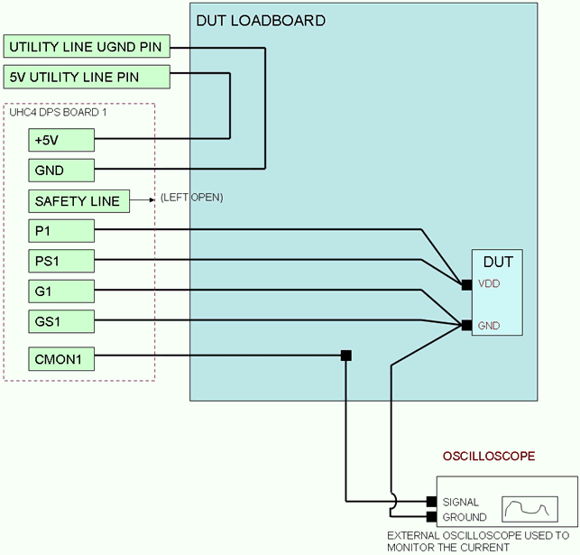
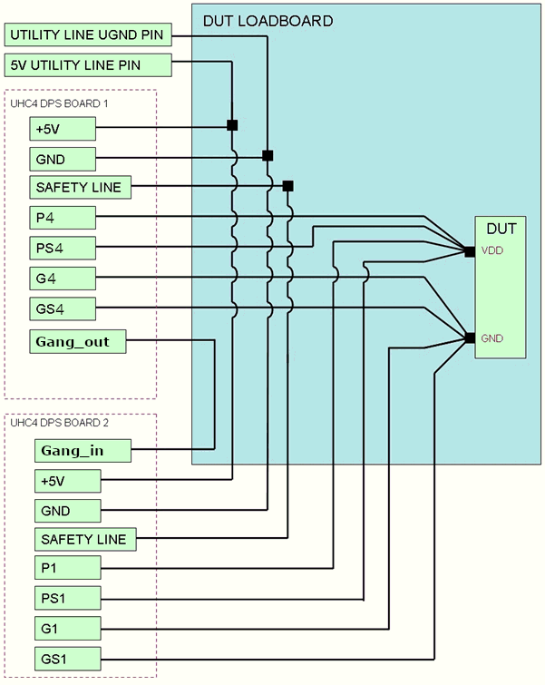
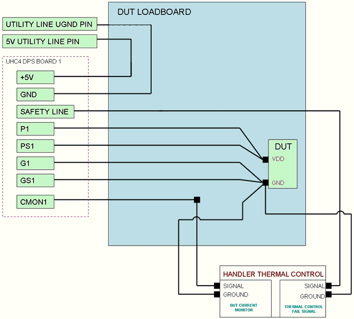
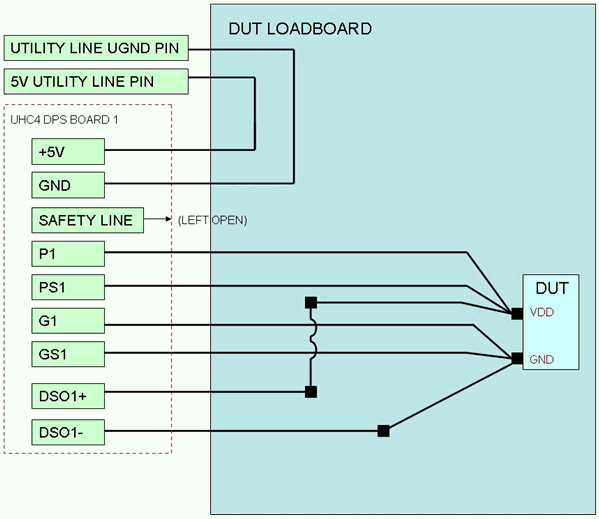
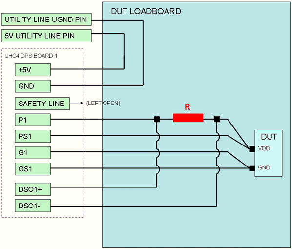

UHC4 / UHC4T DUT board wiring schemes
Below you'll find some examples for typical UHC4 / UHC4T design tasks, based on the following data for safety line and +5V line.
Special signal pins
- +5 V
- Input to connect +5 V from DUT board. If not applied, the card shuts down.
Can be used to detect not properly connected or not assembled DUT board. We
recommend connecting a +5 V utility power supply to this input and the
utility ground UGND to the GND pin.
Input impedance: ~ 1 kΩ Voltage level: 5 V ±10 % Input ground reference: GND (to be connected to UGND of the DUT board) - Safety_line
- One "safety line" fed to the DUT board. The pin must be high or left open to
operate the card. When pulled low, the card shuts down. The pin can be used
to simultaneously shut down all UHC4 cards triggered by one of its own DPS
channels or by an external alarm switch.
Input impedance: 46.6 kΩ pullup resistor to +5 V pin Logic Zero: < 0.5 V Logic 1: > 3.5 V Input ground reference: GND (to be connected to UGND of the DUT board) - CMON#
- Current monitor output. The current monitor output per channel provides a voltage proportional to the output current (+4 V for a 40 A current output). The reference pin is GS#.
- DUT_CAP_ON_# (UHC4 "HLA Rev. 002" or higher or UHC4T)
- The pin can be used to switch the big decoupling- or
bypass capacitors on the DUT board on or off. In the 40 A range the signal
level is 0 V; in the 1.5 A range the signal level is 5 V (referenced to
power ground).
The pin is an open drain output that is shorted to GND in the 40 A range. In the 1.5 A range, the signal level is pulled up to 5 V by an internal 230 Ω resistor. A serial resistor of about 105 Ω limits the output current. For more information, refer to appendix "A1) DUT_CAP_ON#" of application paper Stability of ATE supplies with different ATE test fixtures - UHC4 Stability and special features.
Examples
Example 1
The example below shows the most typical DUT board setup. The 5V pin of a utility line is routed to the 5V input of the UHC4 / UHC4T, so that it will only turn-on if the DUT board is docked to the ATE. The safety line in this case is simply left open (the 5V connection ensures that the UHC4 will not power unless the DUT board is docked). The CMON pin is routed through the DUT board to an external oscilloscope to allow the test engineer to track the current being supplied to the DUT.

Example 2: Ganging two UHC4 cards
The example below describes a configuration in which two UHC4 / UHC4T cards are ganged together.
The utility line is used to provide the needed 5V signal to both UHC4 / UHC4T cards. The SAFETY lines of both cards need to be connected together.
Cross-card ganging requires a daisy chain connection from the last channel of a card to the first channel of the next card within the ganging group: On the DUT board, the "Gang_out" pin is to be wired to the "Gang_in" pin of the next card.

Example 3: Connecting a handler thermal controller
The example below shows how to connect a thermal controller to the UHC4 / UHC4T card so that, if the thermal controller fails (for example out of coolant), the power supply also shuts down. For this the CMON signal is routed to the thermal controller. If the thermal controller fails, it needs to pull down the SAFETY LINE signal to low to shut down the power to the DUT.

Example 4: DUT voltage monitoring
In the example configuration below the UHC4 / UHC4T digital sampling input (DSO) is used to monitor the voltage level at the DUT.

Example 5: DUT current monitoring
This example shows a configuration in which the UHC4 / UHC4T digital sampling input (DSO) is used to monitor the current level at the DUT. The value you choose for the resistor must ensure that the measure voltage (which will be proportional to the current by Ohm's Law) is around 50mV for the nominal current. This ensures the best performance from the UHC4 / UHC4T sampling input and reduces the resistive loss though the resistor to a minimum.

For further UHC4 / UHC4T specific design guidelines see also UHC4 / UHC4T low-level high-current design.
Functional changes
- Introduced in SmarTest 6.5.0
- SmarTest 7.3.2: Support of UHC4T